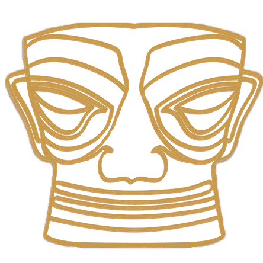

Menu
最后的香格里拉
深山小镇东俄罗
童话世界如仙境
天下名山第一秀
最后的香格里拉:稻城镇
我偷偷的告诉你，有一个地方叫做稻城
我要和我最心爱的人一起去到那里
看蔚蓝的天空，看白色的雪山
看金黄的草地，看一场秋天的童话
我要告诉她
如果没有住在你的心里，都是客死他乡
我要告诉她
相爱这件事情，就是永远在一起
一路上，看得清所有秘密
飞鸟栖息何方，风声永不消匿
让我再看一眼
快乐始于哪一分钟，泪水几点钟落地
神峰戴冰雪冠冕，披白云哈达
卓然挺立，一尘不染
惊世骇俗的神韵让你不由得匍匐跪拜
将胸膛与大地贴近，把灵魂与天空相融
深山小镇东俄罗:新都桥
高原上的春天来的特别晚，新都桥也不例外
白杨吐出翠绿的嫩芽，奇异山花缀满美丽的草原
冬小麦给大地批上绿装，勤劳的藏民开始耕织锦绣田园
诗一般的田园美景让你流年忘返，真可谓人间仙境
新都桥的夏日绿茵葱葱，野花遍地，尤其在早晚低角度的阳光下
新都桥山峦、村寨和杨树形成一幅幅让影人心颤的画面
新都桥因其特殊的地势和光线效果
在任何时候你都可能在夏天欣赏到独特的田园风光
新都桥秋季很是迷人，蓝天白云，杨树一片金黄，朴素的民居
悠闲吃草的牛羊,以及清亮的小河，随意地构成一幅高原美景
尤其在早晚低角度的阳光下，恨不能将醉人的秋色捧一捧掖在心里
谁说的清秋的新都桥像一幅油画抑或水粉
冬天的新都桥，比较荒凉，比之其它季节
自然要逊色一点，色彩凋零，单调而广阔
对于喜欢开阔视野的人来说，也不失为一处好景致
但对于喜欢安静出行的人来说，冬季旅游人数大减，是绝佳的出行时机。
童话世界如仙境:九寨沟
冰雪消融，春水泛涨，山花烂漫
远山的白雪映衬着童话世界
温柔而慵懒的春阳吻接湖面，吻接春芽
在慢慢吻接你感动自然的心境
九寨沟掩映在苍翠欲滴的浓阴之中
五色的海子，流水梳理着翠绿的树枝与水草
银帘般的瀑布抒发四季中最为恣意的激情
温柔的风吹拂经幡，吹拂树梢，吹拂你流水一样自由的心绪
晚秋时节的九寨沟是一部色彩斑斓的童话
苍山雪顶，宛若镶嵌在天空之上的珍珠
红叶垂摇，宛若水底的五色油彩顺流波动
悠远的晴空湛蓝而碧净，自然自造化中最美丽的景致充盈眼底
山峦与树林银装素裹， 瀑布与湖泊冰清玉洁
蓝色湖面的冰层在日出日落的温差中
变幻着奇妙的冰纹，冰凝的瀑布间
细细的水流发出沁人心脾的乐音
天下名山第一秀:峨眉山
自古峨眉天下秀！峨眉山的春天，山顶依旧是雪花的主场
这秀美的峨眉山被白雪笼罩着，云端，禅定，望穿世事
是谁惊艳了时光，雕刻了梦
是峨眉山的“雪精灵”，春已到时恋恋不舍，造就了“春日看雪”的奇景
初夏时光，从山的对岸走到彼岸，美好光景丰富了我们的想象
初夏写在途经的路上，没有一点点失望
有你没看见过的无限风光，让人赞叹之余心就去了远方
我可以，在这里等日出日落，等雾山云海，等月光星芒
秋天的峨眉山到底有多美
你要看的不仅仅只有红叶，而此时在不远的山下
成片的色彩斑斓与阳光交相辉映，这恰到好处的相得益彰
便只有峨眉山的秋天才能给得起
峨眉雪山近乎是婀娜多姿，像是一朵盛开的雪莲，用它圣洁的花瓣
将那片经过秋霜浸染，依然能够看到绿意盎然的冷杉挺拔屹立
不管是干枯的灌木上还是依然挺拔的冷杉上，全部被雪覆盖
冷杉变成了天然的圣诞树，落叶树枝就成了银色世界里的玉树琼花
Scroll
Menu
Close
天府之国

天府之源
天府之绝
天府之味
天府之秀